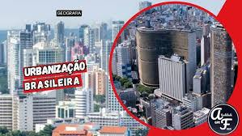
Urbanização no Brasil
Neste vídeo você aprenderá como aconteceu o crescimento das cidades brasileiras, o êxodo rural e os impactos causados pela urbanização acelerada.

A urbanização é o processo em que a população urbana cresce em ritmo mais acelerado do que a população rural. Esse movimento é impulsionado pelo êxodo rural, pela busca de melhores condições de vida, emprego e acesso a serviços básicos.
Com o avanço da urbanização, as cidades enfrentam a necessidade de infraestrutura de transporte, saneamento, moradia e energia. Quando esse crescimento ocorre sem planejamento adequado, surgem graves problemas urbanos, como a periferização e a desigualdade socioespacial.
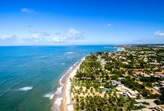
A migração rural-urbana é o movimento de pessoas que deixam o campo para morar nas cidades. Esse fenômeno foi muito forte no Brasil durante o século XX, motivado pela industrialização, mecanização do campo e em busca de empregos e melhores condições de vida.
A chegada rápida e massiva de migrantes causou o inchaço das áreas urbanas, gerando a formação de periferias e favelas, além de sobrecarregar os serviços de transporte, saúde e infraestrutura urbana.
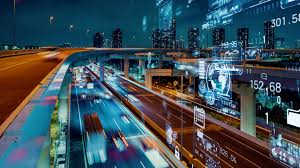
A sustentabilidade urbana busca desenvolver as cidades sem prejudicar o meio ambiente. Para isso, são criadas ações que incentivam a preservação das áreas verdes, reciclagem, economia de água e redução da poluição.
As áreas verdes ajudam a melhorar a qualidade de vida da população através do combate ao calor urbano, conservação de espécies e espaços para o bem-estar comunitário.
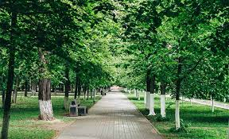
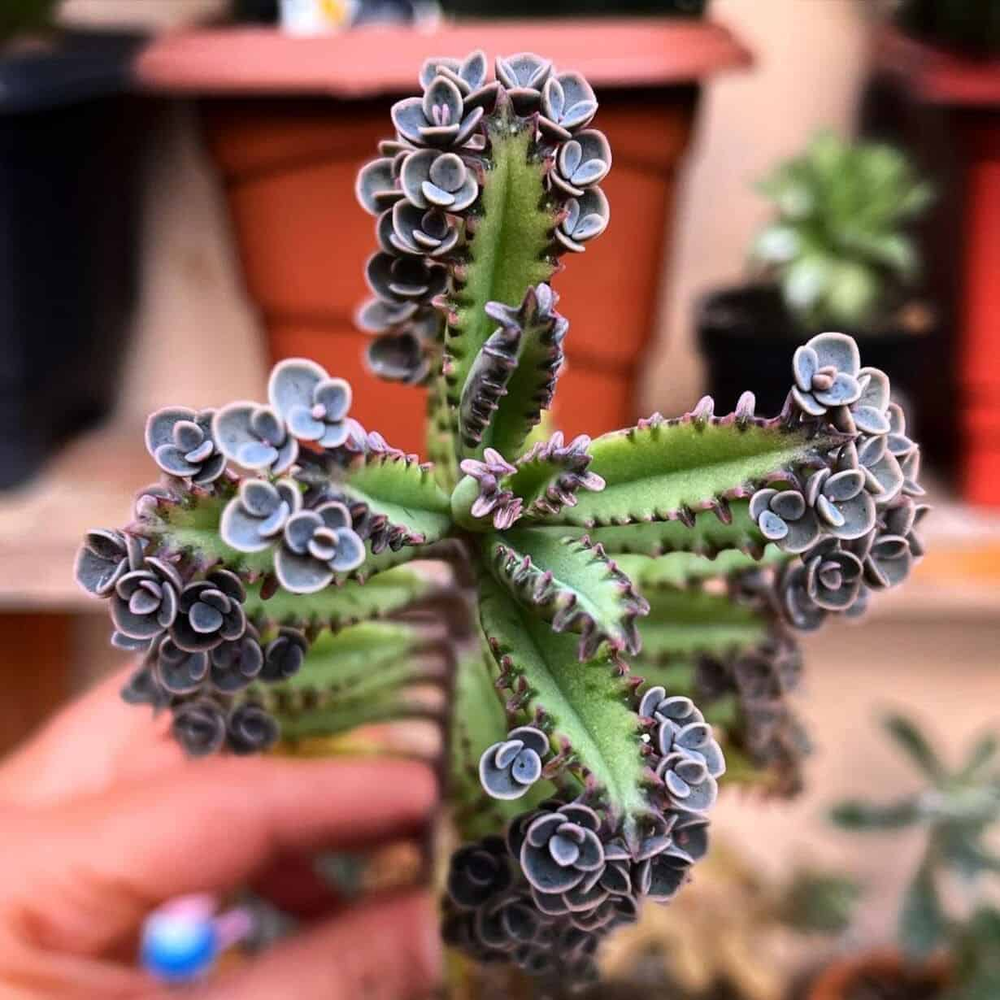
O crescimento acelerado das cidades pode gerar diversos problemas urbanos. Entre eles estão o trânsito intenso, enchentes, poluição, falta de moradia adequada e desigualdade social.
Muitas vezes, a população cresce mais rápido do que a infraestrutura das cidades, dificultando o acesso a serviços básicos como saúde, transporte e saneamento.
A expansão urbana desordenada pode levar à exclusão socioespacial, segregando classes sociais e dificultando o acesso pleno à infraestrutura da cidade.
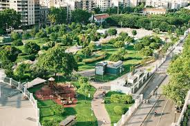
O planejamento de transporte e a distribuição justa de serviços públicos são indispensáveis para garantir uma mobilidade mais eficiente e uma sociedade mais igualitária.
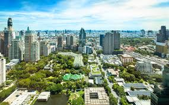
Intervenções urbanísticas e investimentos em novas tecnologias construtivas são cruciais para que o crescimento das cidades ocorra de forma ordenada e sustentável.
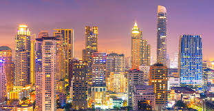
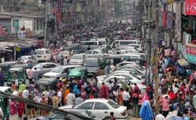
Explore conteúdos em vídeo para aprofundar seu aprendizado sobre o crescimento urbano e seus impactos na sociedade!

Neste vídeo você aprenderá como aconteceu o crescimento das cidades brasileiras, o êxodo rural e os impactos causados pela urbanização acelerada.
Descubra como funcionam os transportes urbanos, metrôs, ônibus, ciclovias e soluções inteligentes que ajudam na circulação das pessoas nas cidades.
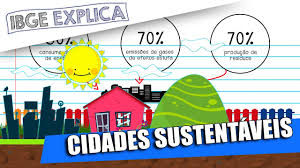
Quer aprender tudo sobre PRESERVAÇÃO DE PLANTAS? Então você está no lugar certo, porque neste vídeo de nossa ecologia explicamos o que é POLUIÇÃO e o que é PRESERVAÇÃO.
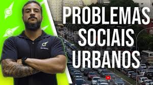
Entenda os principais desafios das grandes cidades, como poluição, enchentes, trânsito intenso e desigualdade social.